粉類
共 125 項商品；名稱保留原站英文，避免規格與品項認錯。
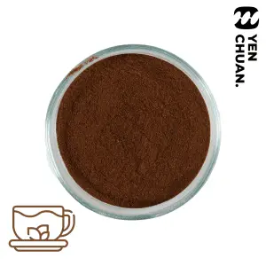
Assam black tea powder紅茶粉 · 商品原名（英文） Waffle powder mix食品預拌粉 · 商品原名（英文）
Waffle powder mix食品預拌粉 · 商品原名（英文） Egg waffle mix powder食品預拌粉 · 商品原名（英文）
Egg waffle mix powder食品預拌粉 · 商品原名（英文） Popcorn chicken frying mix食品預拌粉 · 商品原名（英文）
Popcorn chicken frying mix食品預拌粉 · 商品原名（英文） Fried chicken frying mix食品預拌粉 · 商品原名（英文）
Fried chicken frying mix食品預拌粉 · 商品原名（英文）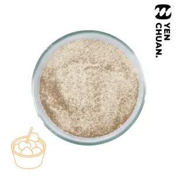
Popcorn chicken marinate powder食品預拌粉 · 商品原名（英文）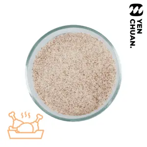
Fried chicken marinate powder食品預拌粉 · 商品原名（英文） Red velvet flavoured powder風味牛奶粉 · 商品原名（英文）
Red velvet flavoured powder風味牛奶粉 · 商品原名（英文） Pistachio flavoured powder風味牛奶粉 · 商品原名（英文）
Pistachio flavoured powder風味牛奶粉 · 商品原名（英文） Almond jelly powder果凍粉 · 商品原名（英文）
Almond jelly powder果凍粉 · 商品原名（英文） Yogurt flavoured powder風味牛奶粉 · 商品原名（英文）
Yogurt flavoured powder風味牛奶粉 · 商品原名（英文）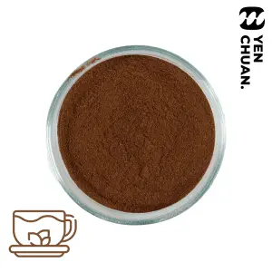
Ceylon black tea powder紅茶粉 · 商品原名（英文） 6X aiyu jelly powder果凍粉 · 商品原名（英文）
6X aiyu jelly powder果凍粉 · 商品原名（英文）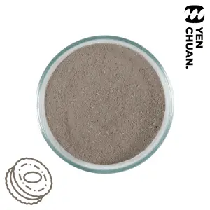
Cookies & cream camo powder原站 CAMO 系列粉類 · 商品原名（英文）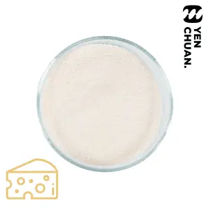
Sea salt cheese camo powder原站 CAMO 系列粉類 · 商品原名（英文） Pumpkin milk powder風味牛奶粉 · 商品原名（英文）
Pumpkin milk powder風味牛奶粉 · 商品原名（英文）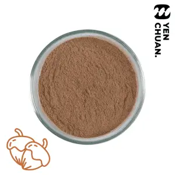
Hazelnut milk powder風味牛奶粉 · 商品原名（英文）Yogurt milk powder風味牛奶粉 · 商品原名（英文）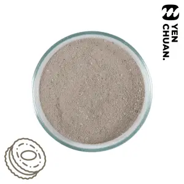
Cookies & cream milk powder風味牛奶粉 · 商品原名（英文）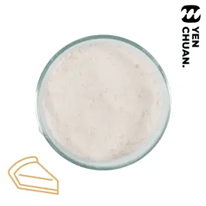
Cheese cake milk powder風味牛奶粉 · 商品原名（英文）Black chocolate milk powder風味牛奶粉 · 商品原名（英文）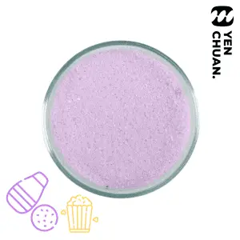
Popcorn taro milk powder風味牛奶粉 · 商品原名（英文） 10X fairy grass powder果凍粉 · 商品原名（英文）
10X fairy grass powder果凍粉 · 商品原名（英文）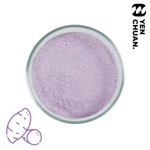
Purple sweet potato camo powder原站 CAMO 系列粉類 · 商品原名（英文）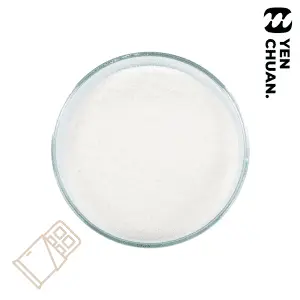
White chocolate camo powder原站 CAMO 系列粉類 · 商品原名（英文） Yellow sweet potato camo powder原站 CAMO 系列粉類 · 商品原名（英文）
Yellow sweet potato camo powder原站 CAMO 系列粉類 · 商品原名（英文）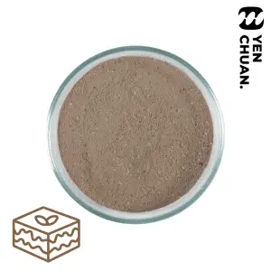
Tiramisu camo powder原站 CAMO 系列粉類 · 商品原名（英文）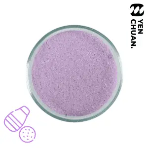
Taro camo powder原站 CAMO 系列粉類 · 商品原名（英文）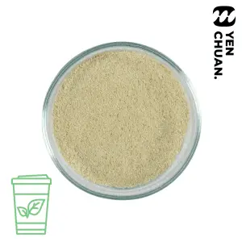
Matcha camo powder原站 CAMO 系列粉類 · 商品原名（英文）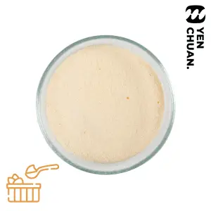
Creme brulee camo powder原站 CAMO 系列粉類 · 商品原名（英文）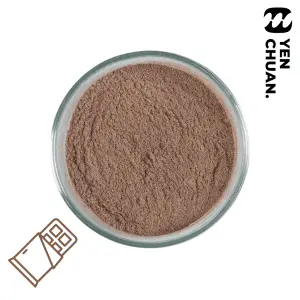
Chocolate camo powder原站 CAMO 系列粉類 · 商品原名（英文）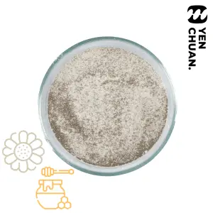
Chamomile & Honey black tea powder紅茶粉 · 商品原名（英文）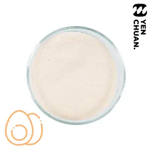
Salted egg cream top powder奶蓋粉 · 商品原名（英文） Cheddar Cheese cream top powder奶蓋粉 · 商品原名（英文）Cheese cream top powder B奶蓋粉 · 商品原名（英文）
Cheddar Cheese cream top powder奶蓋粉 · 商品原名（英文）Cheese cream top powder B奶蓋粉 · 商品原名（英文）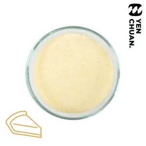
Cheese cake cream top powder奶蓋粉 · 商品原名（英文）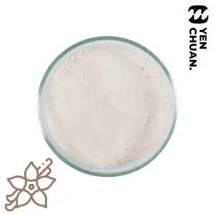
Vanilla cream top powder奶蓋粉 · 商品原名（英文）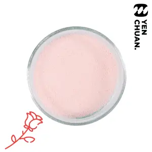
Rose cream top powder奶蓋粉 · 商品原名（英文）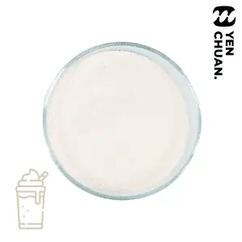
Original cream top powder奶蓋粉 · 商品原名（英文） 200X aiyu jelly powder (caramel colour)果凍粉 · 商品原名（英文）
200X aiyu jelly powder (caramel colour)果凍粉 · 商品原名（英文） 200X aiyu jelly powder (yellow color)果凍粉 · 商品原名（英文）200X aiyu jelly powder (uncoloured)果凍粉 · 商品原名（英文）
200X aiyu jelly powder (yellow color)果凍粉 · 商品原名（英文）200X aiyu jelly powder (uncoloured)果凍粉 · 商品原名（英文） Mango pudding powder果凍粉 · 商品原名（英文）
Mango pudding powder果凍粉 · 商品原名（英文） Matcha pudding powder果凍粉 · 商品原名（英文）
Matcha pudding powder果凍粉 · 商品原名（英文） 15X Lemon aiyu jelly果凍粉 · 商品原名（英文）
15X Lemon aiyu jelly果凍粉 · 商品原名（英文） 6X Egg pudding powder果凍粉 · 商品原名（英文）
6X Egg pudding powder果凍粉 · 商品原名（英文） Coffee jelly powder果凍粉 · 商品原名（英文）20X aiyu jelly powder果凍粉 · 商品原名（英文）
Coffee jelly powder果凍粉 · 商品原名（英文）20X aiyu jelly powder果凍粉 · 商品原名（英文）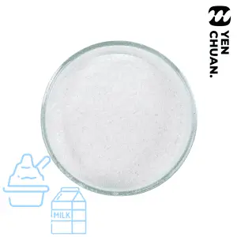
Milk snow ice powder雪花冰粉 · 商品原名（英文）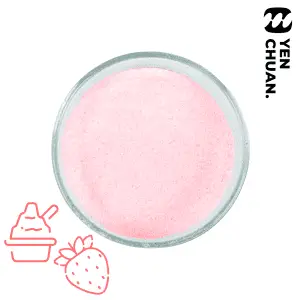
Strawberry snow ice powder雪花冰粉 · 商品原名（英文）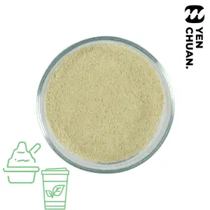
Matcha snow ice powder雪花冰粉 · 商品原名（英文）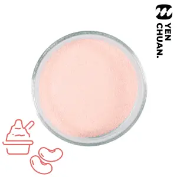
Red bean snow ice powder雪花冰粉 · 商品原名（英文）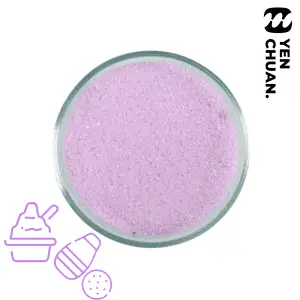
Taro snow ice powder雪花冰粉 · 商品原名（英文）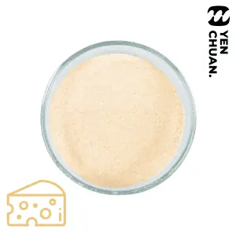
Cheddar Cheesecake smoothie powder冰沙粉 · 商品原名（英文）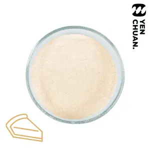
Cheesecake smoothie powder冰沙粉 · 商品原名（英文）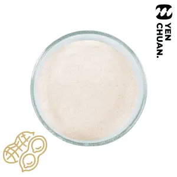
Peanut smoothie powder冰沙粉 · 商品原名（英文）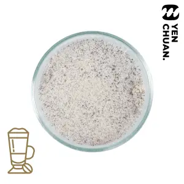
Latte smoothie powder冰沙粉 · 商品原名（英文）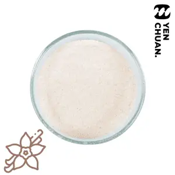
Vanilla smoothie powder冰沙粉 · 商品原名（英文）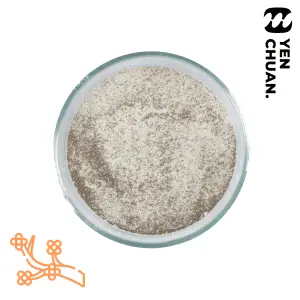
Osmanthus black tea powder紅茶粉 · 商品原名（英文）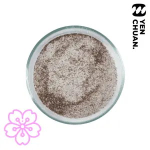
Sakura black tea powder紅茶粉 · 商品原名（英文）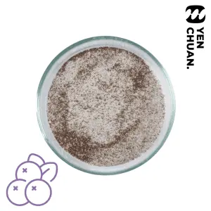
Elderberry black tea powder紅茶粉 · 商品原名（英文）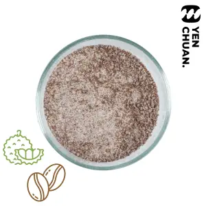
Durian Coffee powder咖啡粉 · 商品原名（英文）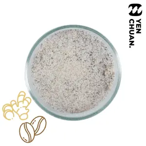
Ginseng Coffee powder咖啡粉 · 商品原名（英文）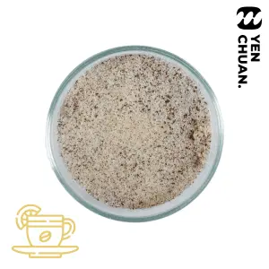
Sicilia Coffee powder咖啡粉 · 商品原名（英文） Vanilla Coffee powder咖啡粉 · 商品原名（英文）
Vanilla Coffee powder咖啡粉 · 商品原名（英文） Mocha Coffee powder咖啡粉 · 商品原名（英文）
Mocha Coffee powder咖啡粉 · 商品原名（英文）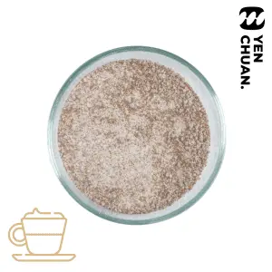
Cappuccino Coffee powder咖啡粉 · 商品原名（英文） Tiramisu Coffee powder咖啡粉 · 商品原名（英文）
Tiramisu Coffee powder咖啡粉 · 商品原名（英文）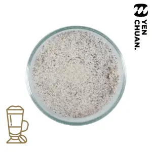
Latte Coffee powder咖啡粉 · 商品原名（英文） Arabica Coffee powder咖啡粉 · 商品原名（英文）
Arabica Coffee powder咖啡粉 · 商品原名（英文）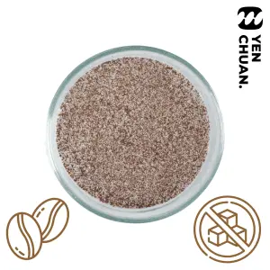
Arabica – Sugar Free Coffee powder咖啡粉 · 商品原名（英文）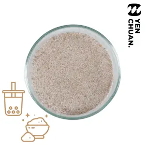
Okinawa Brown sugar milk tea奶茶粉 · 商品原名（英文）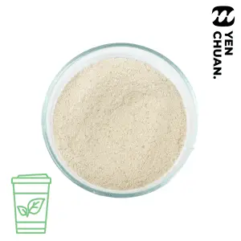
Uji flavored matcha Milk Tea奶茶粉 · 商品原名（英文）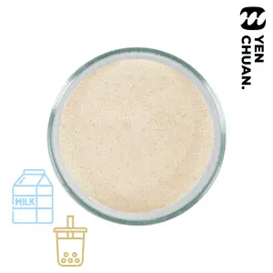
Hokkaido Sapporo Milk Tea奶茶粉 · 商品原名（英文）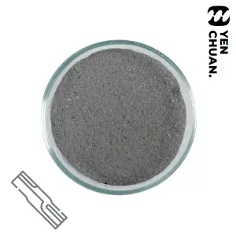
Bamboo charcoal milk tea奶茶粉 · 商品原名（英文）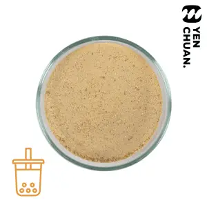
Thai milk tea powder奶茶粉 · 商品原名（英文）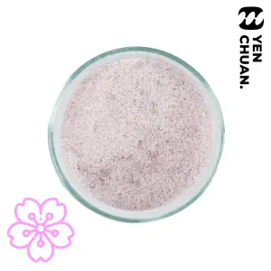
Sakura milk tea powder奶茶粉 · 商品原名（英文）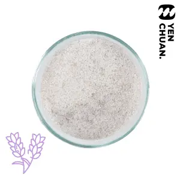
Lavender milk tea powder奶茶粉 · 商品原名（英文）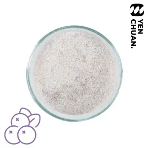
Elderberry milk tea powder奶茶粉 · 商品原名（英文）Osmanthus milk tea powder奶茶粉 · 商品原名（英文）Jasmine milk tea powder奶茶粉 · 商品原名（英文）Camellia milk tea powder奶茶粉 · 商品原名（英文）Malt milk tea powder奶茶粉 · 商品原名（英文）Taro milk tea powder奶茶粉 · 商品原名（英文）Coffee with tea powder奶茶粉 · 商品原名（英文）Earl Grey milk tea powder奶茶粉 · 商品原名（英文）Assam milk tea powder奶茶粉 · 商品原名（英文）Sesame milk powder風味牛奶粉 · 商品原名（英文）Whiskey coffee latte powder風味牛奶粉 · 商品原名（英文）Coffee milk powder風味牛奶粉 · 商品原名（英文）Sake coffee latte風味牛奶粉 · 商品原名（英文）Durian chocolate milk powder風味牛奶粉 · 商品原名（英文）Freesia milk powder風味牛奶粉 · 商品原名（英文）Orchid milk powder風味牛奶粉 · 商品原名（英文）Vanilla milk Powder風味牛奶粉 · 商品原名（英文）Banana milk powder風味牛奶粉 · 商品原名（英文）Strawberry milk powder風味牛奶粉 · 商品原名（英文）Red bean milk powder風味牛奶粉 · 商品原名（英文）Peanut milk powder風味牛奶粉 · 商品原名（英文）Sakura milk powder風味牛奶粉 · 商品原名（英文）Camomile & Honey milk風味牛奶粉 · 商品原名（英文）Lavender milk powder風味牛奶粉 · 商品原名（英文）Rose milk powder風味牛奶粉 · 商品原名（英文）Camellia milk powder風味牛奶粉 · 商品原名（英文）Jasmine milk powder風味牛奶粉 · 商品原名（英文）Osmanthus milk powder風味牛奶粉 · 商品原名（英文）Elderberry milk powder風味牛奶粉 · 商品原名（英文）Egg pudding milk powder風味牛奶粉 · 商品原名（英文）Blueberry milk powder風味牛奶粉 · 商品原名（英文）Pineapple milk powder風味牛奶粉 · 商品原名（英文）Durian milk powder風味牛奶粉 · 商品原名（英文）Grape milk powder風味牛奶粉 · 商品原名（英文）Coconut milk powder風味牛奶粉 · 商品原名（英文）Yellow Honeydew milk powder風味牛奶粉 · 商品原名（英文）Green Honeydew milk powder風味牛奶粉 · 商品原名（英文）Matcha green tea milk powder風味牛奶粉 · 商品原名（英文）Mango milk powder風味牛奶粉 · 商品原名（英文）Taro milk powder風味牛奶粉 · 商品原名（英文）Almond milk powder風味牛奶粉 · 商品原名（英文）Watermelon milk powder風味牛奶粉 · 商品原名（英文）Truffle chocolate milk powder風味牛奶粉 · 商品原名（英文）Apple milk powder風味牛奶粉 · 商品原名（英文）Green apple milk powder風味牛奶粉 · 商品原名（英文）Papaya milk powder風味牛奶粉 · 商品原名（英文）Original milk tea powder奶茶粉 · 商品原名（英文）